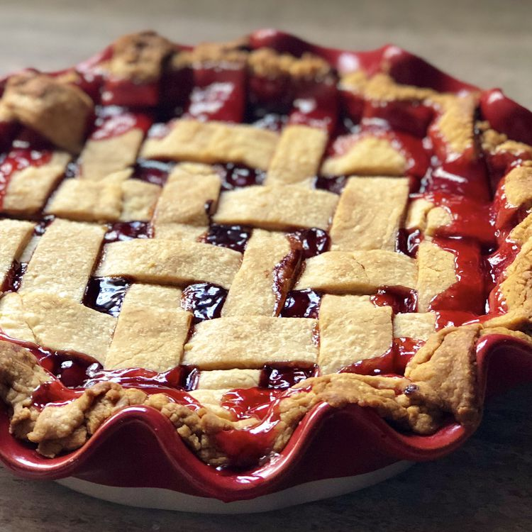

Cherry Pie

Description
This old-fashioned cherry pie recipe features a classic fruity filling in a buttery homemade pastry crust.
It’ll be a welcome dessert on any table!
Ingredients
- For the crust: All-purpose flour, salt, shortening, and cold water
- For the filling: pitted sour cherries, white sugar, cornstarch, butter, and almond extract
How to Make Cherry Pie
- Place cherries, sugar, and cornstarch in a pan. Let sit until the juices begin to release.
- Bring the mixture to a boil, then simmer until the juices are thickened.
- Remove from the heat, then stir in the butter and almond extract. Let cool.
Back